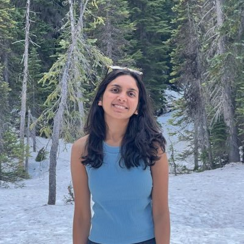

Vishwa Shah
I am a ML Research Engineer at Apple, working on language models for personalization across writing tools and intelligent user experiences. My research explores how language models can understand user preferences and context to enable more contextual, adaptive, and proactive interactions.
Previously, I worked on data curation for LLM pretraining at DatologyAI, persona-based reward modeling as an AI Resident at Meta, and video quality modeling at Amazon. See the Experience and Publications pages for details.
I completed my Master's in Intelligent Information Systems at the Language Technologies Institute, Carnegie Mellon University, advised by Prof. Maarten Sap, and my Bachelor's in Computer Science at BITS Pilani, Goa Campus.
Updates
- Jan 2026 Recognized in BITS 30 Under 30 – Research Leaders by BITS Pilani Alumni Association.
- Oct 2025 MERLIN: A Testbed for Multilingual Multimodal Entity Recognition and Linking accepted at TACL, Volume 14 (2026).
- Apr 2025 Exploring the Pre-conditions for Memory-Learning Agents accepted at the SSI-FM workshop, ICLR 2025.
- Jan 2025 Started as a Machine Learning Research Engineer at Apple.
- Jun 2024 Pre-Calc: Learning to Use the Calculator Improves Numeracy in Language Models accepted at AI4Math, ICML 2024.
- May 2024 Started a Research Internship at DatologyAI.
- Mar 2024 AdaPT: A Set of Guidelines for Hyperbolic Multimodal Multilingual NLP accepted at NAACL 2024 Findings.
- Aug 2023 Joined the MIIS program at the Language Technologies Institute, CMU, for Fall 2023.
- Jul 2022 Started as an AI Resident at Meta.
- Jul 2022 Knowledge-based Analogical Reasoning in Neuro-symbolic Latent Spaces accepted at NeSy, IJCLR 2022.